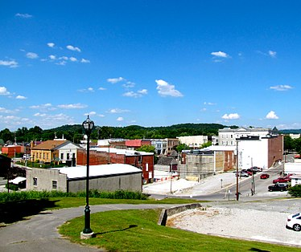
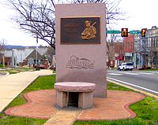
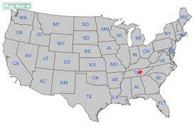
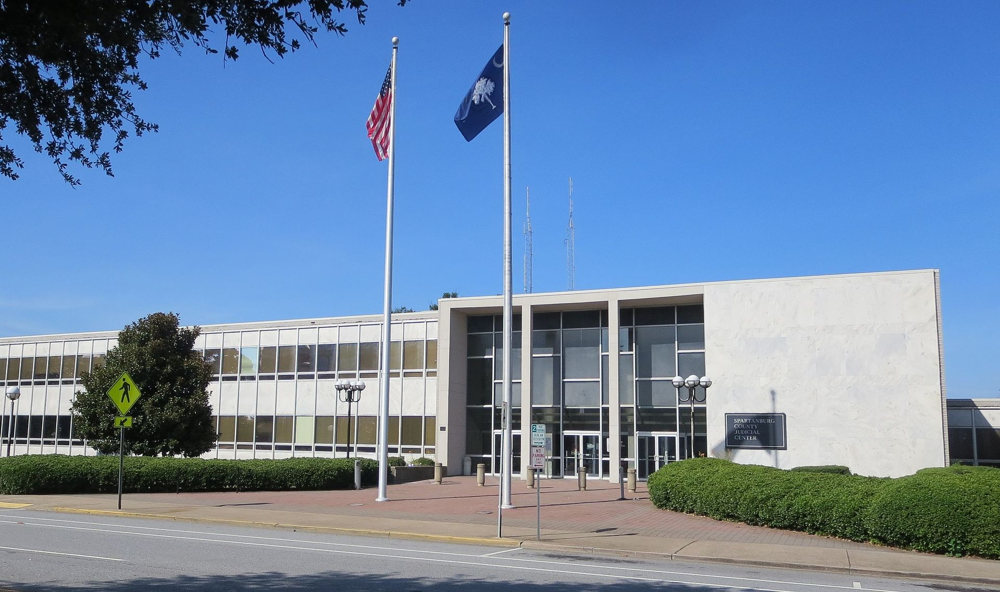
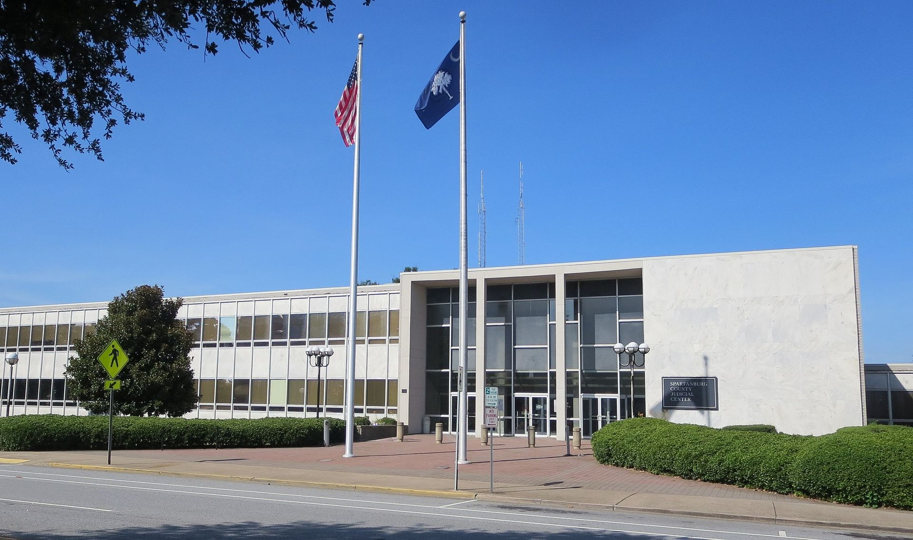

Sparta Around The World
Sparta - city in Tennessee US
info@spartatn.gov
  Sparta is a city and the county seat of White County, Tennessee, United States. The population was 5,001 in 2020. The Calfkiller River flows through the city. Seven sites in Sparta are listed on the National Register of Historic Places. (Wikipedia webpage) From rambling farms that hearken back to a simpler time, to a musical heritage that has brought the area renown as one of the nation's top resonators of the bluegrass roots movement, White County and Sparta, TN, have become a haven for history buffs, music fans and nature lovers alike. (official website of Sparta gov Tennessee)
Sparta nearly became the capital of the state of Tennessee, as, early in the history of Tennessee, the state legislature voted to choose a location for the permanent state capital. The final vote resulted in a near tie between Sparta and Nashville. Sparta lost to Nashville by one vote.
Sparta grew quickly due to its location along the stage road between Knoxville and Nashville. In the 1830s, brothers Barlow and Madison Fisk built the Sparta Rock House, which served as an inn along the stage road. The Rock House, strategically situated in an area where the Cumberland Plateau gives way to the Calfkiller valley, was a common stopover for figures important to the early history of the state, including Andrew Jackson and Sam Houston. The building is now a state historic site and is listed on the National Register of Historic Places.
Sparta - town in North Carolina US
pchoate@townofsparta.org

Sparta is a town in Alleghany County, North Carolina, United States. At the last 2010 census, the population was 1,770 people. It is the county seat of Alleghany County.(Wikipedia webpage) James H. Parks, an early businessman whose store stood near the present location of the ABC store, was one of three men who donated land for the county seat in 1866. Parks is credited with suggesting the name "Sparta", after the Greek city-state.
Noteworthy businesses established in Sparta included The Alleghany News (1889), the Bank of Sparta (1902), and the second store purchased by home improvement giant Lowe's (1949). Sparta's first shopping center, Trojan Village, opened in 1977, followed by Sparta Plaza in 1986.
The Alleghany County Courthouse and Jarvis House are listed on the National Register of Historic Places. On August 9, 2020, the town was the epicenter of a moderate earthquake that was felt as far as Georgia.The earthquake, which registered as a 5.1 on the Richter magnitude scale, was the largest earthquake to occur in North Carolina in over 100 years.
Spartanburg - city in South Carolina US
 

Spartanburg County is a county located on the northwestern border of the U.S. state of South Carolina. As of the 2020 Census, the population was 327,997,making it the fifth-most populous county in South Carolina. Its county seat is Spartanburg. The county was founded in 1785 and was named after the Spartan Rifles, a local militia force during the Revolution. The largest city and the county seat is Spartanburg which resides in Upstate South Carolina.
Spartanburg was formed in 1785, after a deal was made with the Cherokee Nation in 1753, and was named after a local militia called the Spartan Regiment in the American Revolutionary War. The Spartan Regiment, commanded by Andrew Pickens, participated in the nearby Battle of Cowpens. In 1831, Spartanburg was incorporated, later becoming known as the "Hub City"; railroad lines radiated from the city forming the shape of a wheel hub.
It became a center of textile manufacturing in the late 19th century, with around 40 textile mills being established through the early 1900s.
During World War I, Camp Wadsworth was used to train 100,000 soldiers for the war. Camp Croft trained soldiers during World War II. The facility was transferred to the state and adapted as Croft State Park.
By the 1950s, the production in these mills began to decline as wages increased. Most textile manufacturing jobs were moved offshore by the companies.
Sparta - village in Michigan US
villagemanager@spartami.org


Sparta is a village in Kent County in the U.S. state of Michigan. The population was 4,140 at the 2010 census, 4,390 (2020). The village is located within Sparta Township. Sparta is part of the Grand Rapids metropolitan area and is located about 10 miles north of the city of Grand Rapids.
The Sparta area was first settled in 1844, with the township formally organised in 1846. The first settler in what is now the village was Jonathan Nash in 1846. Calling the place Nashville, he built a sawmill on Lick Creek. Subsequently, he changed the name of the creek to Nash Creek. Seeing as there was already a Nashville in Michigan, the state legislature suggested Sparta, meaning land of the fair women. The village was platted in 1867 and incorporated in 1883.
During World War II, Sparta was host to a German prisoner of war camp. The POWs were put to work as farmhands because many of the farmhands from the town had left to go fight in the war. The prisoners were treated relatively well, and later even wrote letters to the owner of the farm they worked on saying such things as, "I like to think back on the nice time we could spend on your farm.
Sparta - city in Georgia US
countyclerk@hancockcountyga.gov


Sparta is a city in and the county seat of Hancock County, Georgia, United States. It is part of the Milledgeville Micropolitan Statistical Area. The city's population was 1,400 at the 2010 census.
Sparta was founded in 1795 in the newly formed Hancock County. The town was designated a county seat in 1797. It was incorporated as a town in 1805 and as a city in 1893.The community was named after Sparta, a city-state in Ancient Greece.
Nueva Esparta - Municipality El Salvador


Nueva Esparta is a municipality in the northeasternmost zone of El Salvador, inside La Unión Department. The municipality is politically divided into the central Pueblo Nueva Esparta, six outlying canton communities and 31 caserios. Nueva Esparta was founded on 15 December 1838, by Colombian Colonel Narciso Benítez, a leader in the Republican Army of Liberator Simón Bolívar. The original population consisted of Honduran immigrants who had ably fought beside General Francisco Morazán's troops—they battled so courageously that Francisco Morazán called the Honduran soldiers ¨my valiant Spartans¨ (an homage to the renowned warriors of Ancient Greek city-state Sparta, who fought back Persian aggressors with only 300 troops). Thus the city came to be known as Nueva Esparta, or “New Sparta.”
The original Honduran immigrant population eventually returned to their home country, and the city soon became settled by families who had arrived from Spain.
On December 15, 1841, The Legislative Assembly of El Salvador granted Nueva Esparta the title of “Pueblo,” belonging to the district of San Antonio El Sauce, San Miguel. June 22, 1865, the pueblo was annexed into the Department of La Unión. February 9, 1883, Nueva Esparta came to form part of the district of Santa Rosa de Lima. March 10, 1892, under the administration of General Carlos Ezeta, Nueva Esparta was declared a “Village” (Villa). March 29, 1966, President Coronel Julio Adalberto Rivera granted Nueva Esparta the title of “City.”
Isparta - city in western Turkey and the capital of Isparta Province.
Isparta is a city in western Turkey and the capital of Isparta Province. The city's population was 222,556 in 2010 and its elevation is 1035 m. It is known as the "City of Roses".
Isparta is a Turkish spelling of Greek Sparta, by prothesis declustering. Isparta was said to correspond to the ancient city of Baris, which is a namesake and was part of the Roman province of Pisidia. A later theory has it instead as the Eastern Roman fortress Saporda; in Muslim sources it appears as Sabarta. GE Bean characterized the situation thus: "These perpetually shifting conceptions leave the reader quite bewildered." Modern scholars locate Baris near Kılıç, in Keçiborlu district, Isparta province.
At an early stage it became a Christian bishopric, a suffragan of the Metropolitan see of Antioch of Pisidia, the capital of the province. The names of two of its bishops are known with certainty: Heraclius participated in the First Council of Nicaea in 325 and Leo in the Second Council of Nicaea in 787. In addition, Paulus was at the Council of Constantinople (869) and Stephanus was at the Council of Constantinople (879), but one or both of these may have been of the Baris in the Roman province of Hellespontus. Like most sees in Asia Minor, it faded away.
- 1203: Conquered by the Seljuq Turks.
- Late 13th century: Becomes part of the Hamidids.
- 1381: Isparta is sold to the Ottoman sultan Murad I by the Hamidid Emir.
- Late 19th century: Muslim refugees from the Balkans settle around Isparta. The Bulgarian refugees brought the knowledge of kazanlik rosewater production with them, leading to Isparta's nickname: city of roses.
- 1914: According to the 1914 Ottoman population statistics, the district of Isparta had a total population of 54.465, consisting of 46.698 Muslims, 6.648 Greeks and 1.119 Armenians.
- 1923: The Greek inhabitants of the area were forced to move to Greece under the Greco-Turkish population exchange.
On November 30, 2007, Atlasjet Flight 4203 crashed on approach to Isparta Süleyman Demirel Airport, killing all 57 passengers and crew.
Sparta - a historic village in Ontario, Canada
tcg@execulink.com


Sparta, Ontario, was once a flourishing settlement in Yarmouth County known as “The Corners.” The Attawandaron (Neutrals) was the first group in the region alongside the Haudenosaunee and Algonquin peoples. The village of Sparta was established in 1813 when Jonathan Doan travelled down Lake Erie by flat-bottomed barge to Kettle Creek looking for a safer place to start a Quaker settlement.
Originally from the United States, Doan fled to the Niagara region before finally settling in Sparta over fears of losing his property for a second time. He purchased 200 acres in Sparta and eventually encouraged other Quakers from around Niagara to move to the area for its rich farming and endless opportunities.
Doan and his family set up a grist mill, sawmill and tannery. Prior to this, settlers had to either use their plumping mills or transport their grain all the way to Long Point for grinding into flour. Doan was also a land agent for over 3,000 acres in Sparta, which provided the space for the Society of Friends (Quaker) Cemetery and meeting house. The first meeting house was a little log building on the corner of Jonathan Doan’s farm. In 1821, a small frame building replaced the old structure and in 1865, a new site was chosen to construct the present meeting house. The naming of Sparta happened in 1834 with a meeting of landowners. It’s unclear how the name was determined but many think it had to do with the classical trend of the day. Troy, now known as Alymer, was nearby, and so was the village of Corinth. In 1837, the community became involved in the Rebellion of 1837 and many fled to the United States. Joshua Doan, son of Jonathan was one of the rebels and was captured at the attack on Windsor and hung for treason in 1839. After the rebellion, many Sparta residents gradually returned to their homes from the United States.